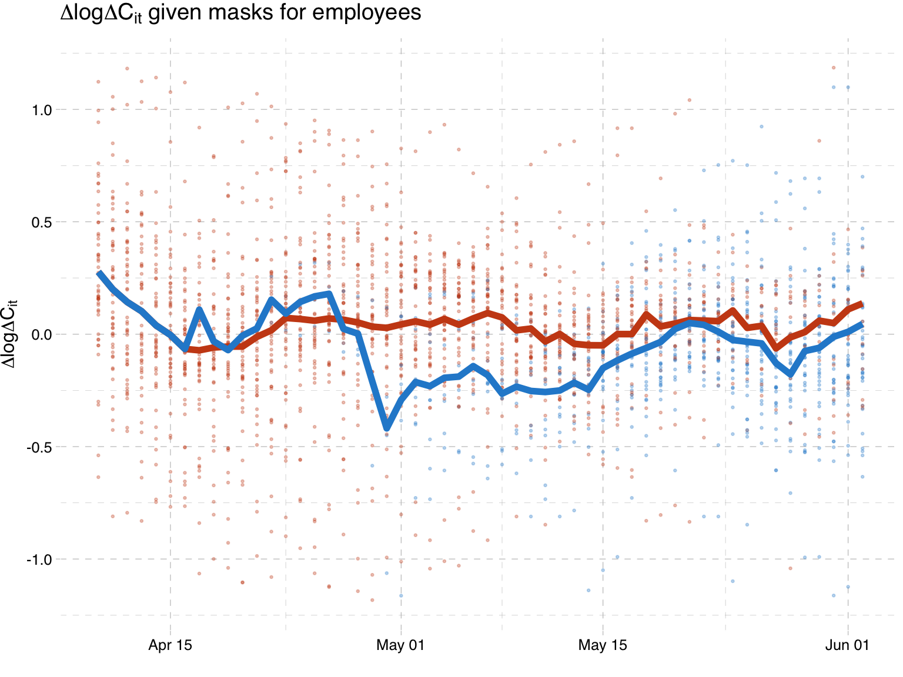
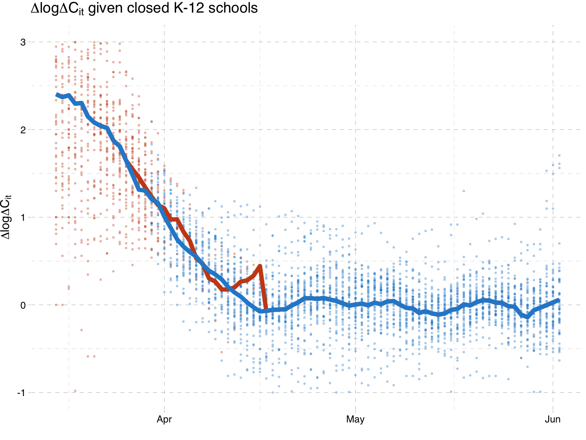
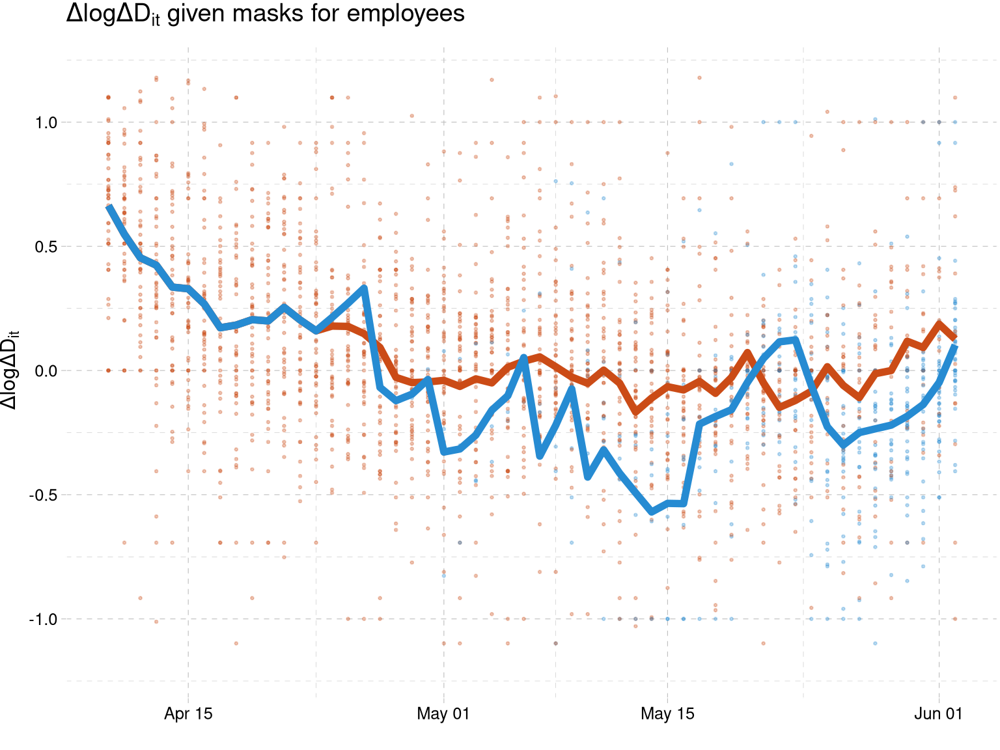

Causal impact of masks, policies, behavior on early COVID-19 pandemic in the U.S.
Tables and Figures
Victor Chernozhukov, Paul Schrimpf, Hiro Kasahara
29 July, 2020
This file creates the figures and tables in Chernozhukov, Kasahara and Schrimpf (2020) “Causal Impact of Masks, Policies, Behavior on Early Covid-19 Pandemic in the U.S.”
1 Data Preparation
2 Empirical Results
2.1 Correlations
cmat <- cor(df[,c(bvars,pols)], use="pairwise.complete.obs")
scmat <-
matrix(sprintf("%.2f",cmat),nrow=(length(bvars)+length(pols)))
rownames(scmat) <- getlabel(rownames(cmat))
colnames(scmat) <- getlabel(colnames(cmat))
scmat[upper.tri(cmat)] <- ""
ltbl <- knitr::kable(scmat, format="latex", booktabs=TRUE, escape=FALSE,
align=(rep("c",ncol(scmat)))) %>%
row_spec(0, angle = 90)
cat(ltbl, file=paste(rootdir,"tex/tables_and_figures/corr.tex",sep="/"))
knitr::kable(scmat)| workplaces | retail | grocery | transit | masks for employees | closed K-12 schools | closed movie theaters | stay at home | closed restaurants | closed businesses | |
|---|---|---|---|---|---|---|---|---|---|---|
| workplaces | 1.00 | |||||||||
| retail | 0.93 | 1.00 | ||||||||
| grocery | 0.73 | 0.82 | 1.00 | |||||||
| transit | 0.89 | 0.91 | 0.82 | 1.00 | ||||||
| masks for employees | -0.31 | -0.15 | -0.13 | -0.28 | 1.00 | |||||
| closed K-12 schools | -0.92 | -0.80 | -0.56 | -0.73 | 0.43 | 1.00 | ||||
| closed movie theaters | -0.81 | -0.76 | -0.64 | -0.71 | 0.33 | 0.82 | 1.00 | |||
| stay at home | -0.69 | -0.69 | -0.70 | -0.72 | 0.28 | 0.62 | 0.73 | 1.00 | ||
| closed restaurants | -0.77 | -0.82 | -0.68 | -0.76 | 0.20 | 0.74 | 0.82 | 0.71 | 1.00 | |
| closed businesses | -0.64 | -0.67 | -0.67 | -0.63 | 0.06 | 0.55 | 0.67 | 0.75 | 0.71 | 1.00 |
2.2 Test Smoothing
We rearrange and linearly interpolate constant test counts, but do not apply any additional smoothing.
rearrange <- function(x, id) {
for (i in unique(id)) {
xi <- x[id==i]
xi[!is.na(xi)] <- sort(xi[!is.na(xi)])
x[id==i] <- xi
}
return(x)
}
dropnotincreasing <- function(x, id, t) {
const <- (x <= panellag(x, id, t))
const[is.na(const)] <- FALSE
x[const & x>0] <- NA
return(x)
}
lininterp <- function(x, id, t) {
for (i in unique(id)) {
xi <- x[id==i]
ti <- t[id==i]
xi[is.na(xi)] <- approx(ti[!is.na(xi)], xi[!is.na(xi)], ti[is.na(xi)])$y
x[id==i] <- xi
}
return(x)
}
smoothtests <- function(x, id, t) {
x[is.na(x)] <- 0
return(lininterp(dropnotincreasing(rearrange(x,id),id,t),id,t))
}
df$neg.interp <- smoothtests(df$negative, df$state, df$date)
df$pos.interp <- df$cases #smoothtests(df$positive, df$state, df$date)
df$tot.interp <- df$neg.interp + df$pos.interp
L <- 7
df$tests <- paneldiff(df$tot.interp, df$state, df$date, lag=L)
df$testrate <- df$tests/df$Population.2018*1000
df$testrate[df$testrate<0] <- NA
df$dlogtests <- paneldiff(log(sapply(df$testrate, function(x)
max(x,exp(-1)))), df$state, df$date, lag=L)
df$testratedc <- df$ddeath/df$dcases*df$testrate
df$testratedc[df$dcases==0] <- 0
df$tests.ma <- paneldiff(panelma(df$neg.interp, df$state, df$date, 7) + df$cases,
df$state, df$date, lag=L)
df$testrate.ma <- df$tests.ma/df$Population.2018*1000
df$testrate.ma[df$testrate.ma<0] <- NA
df$dlogtests.ma <- paneldiff(log(sapply(df$testrate.ma, function(x)
max(x,exp(-1)))), df$state, df$date, lag=L)
df$testratedc.ma <- df$ddeath/df$dcases*df$testrate.ma
df$testratedc.ma[df$dcases==0] <- 02.3 Cases
infovars <- list(c("dlogdc", "logdc"),
c("dlogdc", "logdc","dlogdc.national", "logdc.national")) #,
#c("dlogdc", "logdc"))
#infovars2 <- list(c( "logdc"))
tvars <- "dlogtests"
# xlist <-list("party", "party")
xlist <-list(c("party","logvote"), c("party","logvote"))
interactions <-list("month", statevars)
ilist <- list(interactions, interactions)
iv <- list("0","0") #,"(testratedc ~ lag(testratedc,14))")
L <- 14
sdf <- subset(df, df$date>=as.Date("2020-03-07")) #+L)
regs <- mainregressions(sdf,
"dlogdc", pols, bvars, infovars, tvars, xlist, ilist, iv, L=L)showhtmltables(regs$pib[[1]], regs$pbiy, regs$piy, regs$ip)2.3.1 Policies and Behavior
| Dependent variable: | ||||||||
| workplaces | retail | grocery | transit | workplaces | retail | grocery | transit | |
| (1) | (2) | (3) | (4) | (5) | (6) | (7) | (8) | |
| pmaskbus | -0.001 | -0.012 | -0.022** | -0.024 | -0.001 | -0.012 | -0.023** | -0.027 |
| (0.007) | (0.012) | (0.009) | (0.018) | (0.008) | (0.011) | (0.010) | (0.020) | |
| pk12 | -0.192*** | -0.215*** | -0.131*** | -0.238*** | -0.191*** | -0.224*** | -0.124*** | -0.239*** |
| (0.023) | (0.036) | (0.022) | (0.041) | (0.022) | (0.036) | (0.021) | (0.040) | |
| pmovie | -0.012 | -0.020 | -0.022** | 0.024 | ||||
| (0.010) | (0.014) | (0.010) | (0.021) | |||||
| pshelter | -0.010 | -0.019 | -0.038*** | -0.020 | ||||
| (0.011) | (0.014) | (0.014) | (0.022) | |||||
| prestaurant | -0.021** | -0.063*** | -0.006 | -0.055** | ||||
| (0.008) | (0.012) | (0.007) | (0.026) | |||||
| pnonessential | -0.023** | -0.025** | -0.027** | -0.026 | ||||
| (0.009) | (0.011) | (0.011) | (0.021) | |||||
| pindex | -0.068*** | -0.130*** | -0.091*** | -0.088*** | ||||
| (0.010) | (0.016) | (0.011) | (0.027) | |||||
| dlogdc | 0.017*** | 0.011** | 0.019*** | 0.016*** | 0.017*** | 0.010** | 0.020*** | 0.015*** |
| (0.003) | (0.005) | (0.004) | (0.005) | (0.003) | (0.005) | (0.004) | (0.005) | |
| logdc | -0.026*** | -0.027*** | -0.001 | -0.016* | -0.026*** | -0.027*** | -0.001 | -0.016* |
| (0.004) | (0.007) | (0.004) | (0.009) | (0.004) | (0.007) | (0.004) | (0.009) | |
| logvote | 0.106*** | 0.154*** | 0.106*** | 0.276*** | 0.105*** | 0.158*** | 0.106*** | 0.282*** |
| (0.021) | (0.034) | (0.029) | (0.060) | (0.020) | (0.033) | (0.028) | (0.060) | |
| state variables | Yes | Yes | Yes | Yes | Yes | Yes | Yes | Yes |
| Month : state variables | Yes | Yes | Yes | Yes | Yes | Yes | Yes | Yes |
| sum Policy | -0.258 | -0.352 | -0.245 | -0.339 | -0.260 | -0.367 | -0.238 | -0.354 |
| (0.029) | (0.045) | (0.029) | (0.054) | (0.029) | (0.045) | (0.029) | (0.055) | |
| Observations | 4,312 | 4,312 | 4,312 | 4,312 | 4,312 | 4,312 | 4,312 | 4,312 |
| R2 | 0.924 | 0.878 | 0.792 | 0.838 | 0.924 | 0.875 | 0.789 | 0.835 |
| Adjusted R2 | 0.923 | 0.877 | 0.790 | 0.837 | 0.923 | 0.874 | 0.787 | 0.834 |
| Note: | p<0.1; p<0.05; p<0.01 | |||||||
2.3.2 Policies and Information
| Dependent variable: | ||||||||||||
| pmaskbus | pk12 | pmovie | pshelter | prestaurant | pnonessential | pmaskbus | pk12 | pmovie | pshelter | prestaurant | pnonessential | |
| (1) | (2) | (3) | (4) | (5) | (6) | (7) | (8) | (9) | (10) | (11) | (12) | |
| lag(workplaces, 14) | -0.260 | -0.045 | -0.350 | 0.332 | 0.741 | 0.628 | -0.207 | -0.0005 | -0.365 | 0.327 | -0.022 | 0.075 |
| (0.685) | (0.094) | (0.542) | (0.541) | (0.564) | (0.539) | (0.754) | (0.097) | (0.633) | (0.638) | (0.593) | (0.570) | |
| lag(retail, 14) | 0.329 | -0.032 | -1.644*** | -0.959* | -1.530*** | -1.807*** | -0.145 | 0.244** | -1.242** | -0.446 | -1.080** | -1.236* |
| (0.637) | (0.131) | (0.456) | (0.573) | (0.413) | (0.581) | (0.701) | (0.114) | (0.486) | (0.571) | (0.466) | (0.658) | |
| lag(grocery, 14) | -0.040 | 0.065 | 0.663** | -0.220 | 0.043 | 0.178 | 0.477 | -0.257 | 0.216 | -0.795 | -0.250 | -0.308 |
| (0.443) | (0.172) | (0.329) | (0.445) | (0.403) | (0.349) | (0.530) | (0.166) | (0.363) | (0.497) | (0.534) | (0.449) | |
| lag(transit, 14) | -0.314 | -0.087** | 0.725** | -0.087 | 0.140 | 0.144 | -0.444 | -0.006 | 0.837*** | 0.058 | 0.208 | 0.262 |
| (0.431) | (0.042) | (0.318) | (0.390) | (0.532) | (0.363) | (0.429) | (0.032) | (0.318) | (0.383) | (0.559) | (0.365) | |
| dlogdc | -0.086*** | -0.021 | -0.022 | -0.036 | -0.016 | -0.052 | -0.112*** | -0.003 | 0.001 | -0.005 | -0.022 | -0.041 |
| (0.032) | (0.015) | (0.024) | (0.035) | (0.029) | (0.032) | (0.035) | (0.015) | (0.027) | (0.037) | (0.029) | (0.036) | |
| logdc | 0.021 | 0.014 | 0.020 | 0.031 | 0.036 | 0.061*** | 0.035 | 0.005 | 0.007 | 0.015 | 0.026 | 0.046** |
| (0.033) | (0.009) | (0.024) | (0.023) | (0.024) | (0.022) | (0.035) | (0.008) | (0.025) | (0.024) | (0.024) | (0.021) | |
| dlogdc.national | -0.050 | -0.002 | 0.030 | 0.032 | 0.348*** | 0.267*** | ||||||
| (0.087) | (0.027) | (0.085) | (0.079) | (0.081) | (0.079) | |||||||
| logdc.national | -0.309*** | 0.168*** | 0.257*** | 0.326*** | 0.407*** | 0.451*** | ||||||
| (0.081) | (0.024) | (0.064) | (0.071) | (0.071) | (0.086) | |||||||
| logvote | -0.257** | 0.013 | -0.220* | -0.488*** | -0.479*** | -0.098 | -0.237* | -0.006 | -0.240** | -0.515*** | -0.432*** | -0.077 |
| (0.130) | (0.051) | (0.114) | (0.166) | (0.145) | (0.192) | (0.123) | (0.049) | (0.115) | (0.164) | (0.147) | (0.190) | |
| state variables | Yes | Yes | Yes | Yes | Yes | Yes | Yes | Yes | Yes | Yes | Yes | Yes |
| Month : state variables | Yes | Yes | Yes | Yes | Yes | Yes | Yes | Yes | Yes | Yes | Yes | Yes |
| sum behavior | 0.115 | 0.061 | 0.442 | 0.322 | 0.250 | 0.395 | 0.275 | -0.064 | 0.293 | 0.126 | 0.406 | 0.414 |
| (0.202) | (0.052) | (0.144) | (0.184) | (0.146) | (0.142) | (0.257) | (0.053) | (0.204) | (0.239) | (0.235) | (0.192) | |
| Observations | 3,626 | 3,626 | 3,626 | 3,626 | 3,626 | 3,626 | 3,626 | 3,626 | 3,626 | 3,626 | 3,626 | 3,626 |
| R2 | 0.542 | 0.229 | 0.462 | 0.598 | 0.451 | 0.524 | 0.555 | 0.284 | 0.477 | 0.612 | 0.473 | 0.544 |
| Adjusted R2 | 0.538 | 0.222 | 0.457 | 0.594 | 0.446 | 0.520 | 0.551 | 0.277 | 0.472 | 0.608 | 0.468 | 0.540 |
| Note: | p<0.1; p<0.05; p<0.01 | |||||||||||
2.3.3 Policy, Behavior, and Case Growth
| Dependent variable: | ||||
| (1) | (2) | (3) | (4) | |
| lag(pmaskbus, 14) | -0.083** | -0.085*** | -0.092*** | -0.093*** |
| (0.033) | (0.033) | (0.030) | (0.030) | |
| lag(pk12, 14) | -0.153* | -0.129* | -0.029 | 0.002 |
| (0.091) | (0.074) | (0.103) | (0.091) | |
| lag(pmovie, 14) | 0.038 | 0.054 | ||
| (0.049) | (0.047) | |||
| lag(pshelter, 14) | -0.071 | -0.081 | ||
| (0.052) | (0.054) | |||
| lag(prestaurant, 14) | 0.024 | 0.026 | ||
| (0.047) | (0.046) | |||
| lag(pnonessential, 14) | -0.015 | -0.041 | ||
| (0.044) | (0.042) | |||
| lag(pindex, 14) | -0.032 | -0.054 | ||
| (0.091) | (0.093) | |||
| lag(workplaces, 14) | 0.802 | 0.870 | -0.102 | 0.003 |
| (0.557) | (0.557) | (0.596) | (0.590) | |
| lag(retail, 14) | 0.456 | 0.342 | 0.057 | -0.047 |
| (0.334) | (0.331) | (0.369) | (0.386) | |
| lag(grocery, 14) | -0.553* | -0.473* | -0.188 | -0.114 |
| (0.297) | (0.283) | (0.291) | (0.279) | |
| lag(transit, 14) | 0.449 | 0.488* | 0.374 | 0.426 |
| (0.275) | (0.280) | (0.262) | (0.269) | |
| lag(dlogdc, 14) | 0.017 | 0.017 | 0.033 | 0.030 |
| (0.025) | (0.026) | (0.027) | (0.028) | |
| lag(logdc, 14) | -0.118*** | -0.118*** | -0.102*** | -0.101*** |
| (0.022) | (0.022) | (0.025) | (0.025) | |
| lag(dlogdc.national, 14) | -0.123*** | -0.110*** | ||
| (0.041) | (0.041) | |||
| lag(logdc.national, 14) | -0.227*** | -0.218*** | ||
| (0.052) | (0.051) | |||
| dlogtests | 0.138*** | 0.133*** | 0.140*** | 0.135*** |
| (0.043) | (0.044) | (0.041) | (0.042) | |
| logvote | 0.181 | 0.187 | 0.280** | 0.280** |
| (0.138) | (0.132) | (0.140) | (0.133) | |
| state variables | Yes | Yes | Yes | Yes |
| Month : state variables | Yes | Yes | Yes | Yes |
| sum policies | -0.260 | -0.246 | -0.162 | -0.145 |
| (0.137) | (0.131) | (0.161) | (0.154) | |
| sum behavior | -0.657 | -0.666 | -0.113 | -0.147 |
| (0.152) | (0.157) | (0.163) | (0.162) | |
| Observations | 3,624 | 3,624 | 3,624 | 3,624 |
| R2 | 0.766 | 0.765 | 0.774 | 0.773 |
| Adjusted R2 | 0.764 | 0.763 | 0.771 | 0.770 |
| Note: | p<0.1; p<0.05; p<0.01 | |||
2.3.4 Policy and Case Growth
| Dependent variable: | ||||
| (1) | (2) | (3) | (4) | |
| lag(pmaskbus, 14) | -0.077** | -0.080** | -0.093*** | -0.094*** |
| (0.034) | (0.034) | (0.030) | (0.029) | |
| lag(pk12, 14) | -0.273*** | -0.253*** | -0.028 | -0.005 |
| (0.090) | (0.073) | (0.105) | (0.095) | |
| lag(pmovie, 14) | 0.052 | 0.075* | ||
| (0.051) | (0.045) | |||
| lag(pshelter, 14) | -0.099* | -0.083 | ||
| (0.054) | (0.053) | |||
| lag(prestaurant, 14) | -0.017 | 0.017 | ||
| (0.049) | (0.046) | |||
| lag(pnonessential, 14) | -0.056 | -0.046 | ||
| (0.047) | (0.042) | |||
| lag(pindex, 14) | -0.146* | -0.063 | ||
| (0.079) | (0.084) | |||
| lag(dlogdc, 14) | 0.039 | 0.041* | 0.035 | 0.034 |
| (0.025) | (0.024) | (0.027) | (0.027) | |
| lag(logdc, 14) | -0.154*** | -0.153*** | -0.102*** | -0.101*** |
| (0.021) | (0.021) | (0.026) | (0.026) | |
| lag(dlogdc.national, 14) | -0.128*** | -0.112*** | ||
| (0.039) | (0.036) | |||
| lag(logdc.national, 14) | -0.248*** | -0.243*** | ||
| (0.047) | (0.046) | |||
| dlogtests | 0.135*** | 0.132*** | 0.140*** | 0.136*** |
| (0.044) | (0.044) | (0.041) | (0.042) | |
| logvote | 0.364** | 0.382*** | 0.352** | 0.372*** |
| (0.154) | (0.148) | (0.137) | (0.130) | |
| state variables | Yes | Yes | Yes | Yes |
| Month : state variables | Yes | Yes | Yes | Yes |
| sum policies | -0.470 | -0.478 | -0.158 | -0.161 |
| (0.130) | (0.126) | (0.152) | (0.147) | |
| Observations | 3,624 | 3,624 | 3,624 | 3,624 |
| R2 | 0.760 | 0.758 | 0.773 | 0.771 |
| Adjusted R2 | 0.757 | 0.756 | 0.771 | 0.769 |
| Note: | p<0.1; p<0.05; p<0.01 | |||
NULL
savetextables(regs$pib[[1]], NULL, NULL, prefix="behavior")NULL
savetextables(c(regs$pib[[1]][1:4], regs$pib[[2]][1:4]), NULL, NULL, prefix="behavior-NI")NULL
savetextables(c(regs$pib[[1]][1:4]), NULL, NULL, prefix="behavior-cases-stateinfo")NULL
savetextables(c(regs$pib[[2]][1:4]), NULL, NULL, prefix="behavior-cases-nationinfo")NULL
savetextables(NULL, regs$pbiy, regs$piy, prefix="cases")NULL
savetextables(NULL, regs$pbiy[c(1,3)], regs$piy[c(1,3)], prefix="cases-nosplit")NULL
for (use.national in c(TRUE,FALSE)) {
sb <- ifelse(use.national, 2, 1)
sy <- ifelse(use.national, 3, 1)
pib <- lapply(regs$pib[[sb]][1:4], function(x) x$reg)
pbiy <- regs$pbiy[[sy]]$reg
piy <- regs$piy[[sy]]$reg
S <- 999
bs <- bootstrap_felm(sdf, c(pib,list(pbiy,piy)), S=S)
addse <- function(di, bdi) {
se <- di*NA
for (i in 1:length(se)) {
se[i] <- sd(sapply(bdi, function(b) b[i]))
}
tbl <- matrix(NA, nrow=2*nrow(di), ncol=ncol(di))
for (i in 1:nrow(di)) {
tbl[2*(i-1) + 1,] <- sapply(1:ncol(di), function(j) printstars(di[i,j], se[i,j]))
tbl[2*i,] <- sprintf("(%.3f)", se[i,])
}
colnames(tbl) <- colnames(di)
rownames(tbl) <- rep("", nrow(tbl))
rownames(tbl)[seq(1,nrow(tbl),by=2)] <- relabel(rownames(di))
return(tbl)
}
diall <- dieff_table(lapply(regs$pib[[sb]][1:4], function(x) x$reg$coef[,1]),
regs$pbiy[[sy]]$reg$coef[,1],
regs$piy[[sy]]$reg$coef[,1],
policies=c(pols, infovars[[sb]]), nsum=length(pols))
bdiall <- lapply(1:S, function(i)
dieff_table(lapply(1:4, function(j) bs[[j]][,i]),
bs[[5]][,i], bs[[6]][,i],
policies=c(pols, infovars[[sb]]), nsum=length(pols))
)
tbl <- addse(diall, bdiall)
#tbl <- tbl[-c(nrow(tbl), nrow(tbl)-1),]
ltbl <- kable(tbl, digits=2, format="latex", booktabs=TRUE, escape=FALSE,
linesep="",
align=(rep("c",ncol(tbl)))) %>%
column_spec(column=ncol(tbl)+1, border_left=TRUE)
cat(ltbl, file=paste(rootdir,
sprintf("tex/tables_and_figures/dieff-cases-%s.tex",ifelse(use.national, "NI","SI")),
sep="/"))
kable(tbl)
}2.4 Deaths (with deaths as information)
df$zero <- 0
infovarsd <- list(c("dlogdd", "logdd"),
c("dlogdd", "logdd","dlogdd.national", "logdd.national"))
# infovarsd <- list(c("logdd")
L <- 21
sdf <- subset(df, df$date>=as.Date("2020-03-07")) #+L)
#sdf <- subset(df, df$date>=as.Date("2020-02-29")) #+L)
regs <- mainregressions(sdf,
"dlogdd", pols, bvars, infovarsd, "zero", xlist, ilist, iv, L=L)
showhtmltables(regs$pib[[1]], regs$pbiy, regs$piy);2.4.1 Policies and Behavior
| Dependent variable: | ||||||||
| workplaces | retail | grocery | transit | workplaces | retail | grocery | transit | |
| (1) | (2) | (3) | (4) | (5) | (6) | (7) | (8) | |
| pmaskbus | -0.004 | -0.018* | -0.027*** | -0.030 | -0.004 | -0.020** | -0.027** | -0.034* |
| (0.007) | (0.011) | (0.009) | (0.018) | (0.007) | (0.010) | (0.011) | (0.020) | |
| pk12 | -0.245*** | -0.271*** | -0.130*** | -0.270*** | -0.247*** | -0.283*** | -0.121*** | -0.271*** |
| (0.020) | (0.028) | (0.016) | (0.030) | (0.019) | (0.026) | (0.014) | (0.026) | |
| pmovie | -0.014 | -0.026* | -0.024** | 0.019 | ||||
| (0.010) | (0.015) | (0.011) | (0.021) | |||||
| pshelter | -0.006 | -0.017 | -0.041*** | -0.021 | ||||
| (0.011) | (0.014) | (0.015) | (0.023) | |||||
| prestaurant | -0.027*** | -0.066*** | -0.005 | -0.057** | ||||
| (0.009) | (0.013) | (0.007) | (0.025) | |||||
| pnonessential | -0.023*** | -0.028*** | -0.028** | -0.029 | ||||
| (0.008) | (0.011) | (0.011) | (0.020) | |||||
| pindex | -0.073*** | -0.143*** | -0.095*** | -0.098*** | ||||
| (0.013) | (0.021) | (0.012) | (0.029) | |||||
| dlogdd | -0.008** | -0.020*** | -0.005 | -0.013** | -0.009** | -0.022*** | -0.003 | -0.014** |
| (0.004) | (0.006) | (0.004) | (0.006) | (0.004) | (0.006) | (0.004) | (0.006) | |
| logdd | -0.015*** | -0.008 | -0.002 | -0.006 | -0.015*** | -0.007 | -0.003 | -0.005 |
| (0.003) | (0.006) | (0.005) | (0.008) | (0.003) | (0.006) | (0.005) | (0.008) | |
| logvote | 0.097*** | 0.136*** | 0.112*** | 0.269*** | 0.094*** | 0.137*** | 0.113*** | 0.273*** |
| (0.019) | (0.034) | (0.029) | (0.059) | (0.018) | (0.034) | (0.029) | (0.058) | |
| state variables | Yes | Yes | Yes | Yes | Yes | Yes | Yes | Yes |
| Month : state variables | Yes | Yes | Yes | Yes | Yes | Yes | Yes | Yes |
| sum Policy | -0.319 | -0.428 | -0.254 | -0.386 | -0.324 | -0.446 | -0.242 | -0.403 |
| (0.019) | (0.029) | (0.024) | (0.043) | (0.019) | (0.028) | (0.024) | (0.042) | |
| Observations | 4,312 | 4,312 | 4,312 | 4,312 | 4,312 | 4,312 | 4,312 | 4,312 |
| R2 | 0.910 | 0.867 | 0.783 | 0.836 | 0.910 | 0.864 | 0.780 | 0.833 |
| Adjusted R2 | 0.910 | 0.866 | 0.782 | 0.835 | 0.909 | 0.863 | 0.778 | 0.832 |
| Note: | p<0.1; p<0.05; p<0.01 | |||||||
2.4.2 Policy, Behavior, and Death Growth
| Dependent variable: | ||||
| (1) | (2) | (3) | (4) | |
| lag(pmaskbus, 21) | -0.175*** | -0.168*** | -0.177*** | -0.171*** |
| (0.056) | (0.056) | (0.054) | (0.053) | |
| lag(pk12, 21) | -0.315*** | -0.282*** | -0.253** | -0.218** |
| (0.103) | (0.104) | (0.101) | (0.102) | |
| lag(pmovie, 21) | 0.025 | 0.047 | ||
| (0.096) | (0.092) | |||
| lag(pshelter, 21) | -0.067 | -0.065 | ||
| (0.072) | (0.072) | |||
| lag(prestaurant, 21) | 0.078 | 0.072 | ||
| (0.075) | (0.072) | |||
| lag(pnonessential, 21) | -0.009 | -0.015 | ||
| (0.057) | (0.057) | |||
| lag(pindex, 21) | 0.024 | 0.033 | ||
| (0.088) | (0.092) | |||
| lag(workplaces, 21) | 1.148** | 1.169** | 0.507 | 0.549 |
| (0.513) | (0.525) | (0.525) | (0.532) | |
| lag(retail, 21) | 0.507 | 0.379 | 0.379 | 0.257 |
| (0.455) | (0.429) | (0.443) | (0.421) | |
| lag(grocery, 21) | -1.083*** | -0.954** | -0.960** | -0.840** |
| (0.405) | (0.380) | (0.378) | (0.355) | |
| lag(transit, 21) | 0.435 | 0.454 | 0.437 | 0.465 |
| (0.299) | (0.329) | (0.289) | (0.322) | |
| lag(dlogdd, 21) | 0.004 | 0.009 | 0.008 | 0.012 |
| (0.035) | (0.035) | (0.037) | (0.037) | |
| lag(logdd, 21) | -0.060** | -0.065*** | -0.063** | -0.067*** |
| (0.026) | (0.025) | (0.025) | (0.024) | |
| lag(dlogdd.national, 21) | -0.075* | -0.071 | ||
| (0.045) | (0.044) | |||
| lag(logdd.national, 21) | -0.070** | -0.068* | ||
| (0.033) | (0.035) | |||
| zero | ||||
| (0.000) | (0.000) | (0.000) | (0.000) | |
| logvote | 0.197 | 0.202 | 0.260 | 0.264 |
| (0.193) | (0.189) | (0.193) | (0.190) | |
| state variables | Yes | Yes | Yes | Yes |
| Month : state variables | Yes | Yes | Yes | Yes |
| sum policies | -0.463 | -0.426 | -0.392 | -0.356 |
| (0.171) | (0.165) | (0.174) | (0.167) | |
| sum behavior | -0.752 | -0.733 | -0.436 | -0.431 |
| (0.194) | (0.184) | (0.188) | (0.188) | |
| Observations | 3,283 | 3,283 | 3,283 | 3,283 |
| R2 | 0.517 | 0.516 | 0.518 | 0.517 |
| Adjusted R2 | 0.511 | 0.510 | 0.512 | 0.511 |
| Note: | p<0.1; p<0.05; p<0.01 | |||
2.4.3 Policy and Death Growth
| Dependent variable: | ||||
| (1) | (2) | (3) | (4) | |
| lag(pmaskbus, 21) | -0.163*** | -0.161*** | -0.185*** | -0.181*** |
| (0.057) | (0.054) | (0.053) | (0.051) | |
| lag(pk12, 21) | -0.635*** | -0.610*** | -0.279*** | -0.250** |
| (0.115) | (0.109) | (0.104) | (0.104) | |
| lag(pmovie, 21) | 0.029 | 0.076 | ||
| (0.095) | (0.088) | |||
| lag(pshelter, 21) | -0.064 | -0.043 | ||
| (0.068) | (0.067) | |||
| lag(prestaurant, 21) | -0.0003 | 0.046 | ||
| (0.060) | (0.056) | |||
| lag(pnonessential, 21) | -0.039 | -0.018 | ||
| (0.059) | (0.056) | |||
| lag(pindex, 21) | -0.085 | 0.044 | ||
| (0.075) | (0.085) | |||
| lag(dlogdd, 21) | -0.009 | -0.005 | 0.010 | 0.014 |
| (0.033) | (0.033) | (0.037) | (0.036) | |
| lag(logdd, 21) | -0.088*** | -0.090*** | -0.074*** | -0.077*** |
| (0.023) | (0.023) | (0.024) | (0.023) | |
| lag(dlogdd.national, 21) | -0.152** | -0.145** | ||
| (0.059) | (0.057) | |||
| lag(logdd.national, 21) | -0.113*** | -0.111*** | ||
| (0.030) | (0.030) | |||
| zero | ||||
| (0.000) | (0.000) | (0.000) | (0.000) | |
| logvote | 0.328* | 0.341** | 0.352** | 0.366** |
| (0.175) | (0.172) | (0.178) | (0.174) | |
| state variables | Yes | Yes | Yes | Yes |
| Month : state variables | Yes | Yes | Yes | Yes |
| sum policies | -0.873 | -0.856 | -0.402 | -0.388 |
| (0.152) | (0.148) | (0.172) | (0.165) | |
| Observations | 3,283 | 3,283 | 3,283 | 3,283 |
| R2 | 0.504 | 0.504 | 0.514 | 0.513 |
| Adjusted R2 | 0.499 | 0.499 | 0.509 | 0.508 |
| Note: | p<0.1; p<0.05; p<0.01 | |||
NULL
savetextables(regs$pib[[1]], NULL, NULL, prefix="behavior-deathsinfo")NULL
savetextables(c(regs$pib[[1]][1:4], regs$pib[[2]][1:4]), NULL, NULL, prefix="behavior-deathsinfo-NI")NULL
savetextables(c(regs$pib[[1]][1:4]), NULL, NULL, prefix="behavior-deathsinfo-stateinfo")NULL
savetextables(c(regs$pib[[2]][1:4]), NULL, NULL, prefix="behavior-deathsinfo-nationinfo")NULL
savetextables(NULL, regs$pbiy, regs$piy, prefix="deaths-deathsinfo")NULL
savetextables(NULL, regs$pbiy[c(1,3)], regs$piy[c(1,3)], prefix="deaths-deathsinfo-nosplit") NULL
for (use.national in c(TRUE,FALSE)) {
sb <- ifelse(use.national, 2, 1)
sy <- ifelse(use.national, 3, 1)
pib <- lapply(regs$pib[[sb]][1:4], function(x) x$reg)
pbiy <- regs$pbiy[[sy]]$reg
piy <- regs$piy[[sy]]$reg
S <- 999
bs <- bootstrap_felm(sdf, c(pib,list(pbiy,piy)), S=S)
diall <- dieff_table(lapply(regs$pib[[sb]][1:4], function(x) x$reg$coef[,1]),
regs$pbiy[[sy]]$reg$coef[,1],
regs$piy[[sy]]$reg$coef[,1],
policies=c(pols, infovarsd[[sb]]),
nsum=length(pols)
)
bdiall <- lapply(1:S, function(i)
dieff_table(lapply(1:4, function(j) bs[[j]][,i]),
bs[[5]][,i], bs[[6]][,i],
policies=c(pols, infovarsd[[sb]]),
nsum=length(pols)
))
tbl <- addse(diall, bdiall)
#tbl <- tbl[-c(nrow(tbl), nrow(tbl)-1),]
ltbl <- kable(tbl, digits=2, format="latex", booktabs=TRUE, escape=FALSE,
linesep="",
align=(rep("c",ncol(tbl)))) %>%
column_spec(column=ncol(tbl)+1, border_left=TRUE)
cat(ltbl, file=paste(rootdir,
sprintf("tex/tables_and_figures/dieff-deaths-deathsinfo-%s.tex",ifelse(use.national, "NI","SI")),
sep="/"))
kable(tbl)
}2.5 Robustness Check
infovars <- list(c("dlogdc", "logdc"),
c("dlogdc", "logdc","dlogdc.national", "logdc.national")) #,
#c("dlogdc", "logdc"))
#infovars2 <- list(c( "logdc"))
tvars <- "dlogtests"
interactions <-list("month", statevars)
ilist <- list(interactions, interactions)
iv <- list("0","0") #,"(testratedc ~ lag(testratedc,14))")
L <- 14
sdf <- subset(df, df$date>=as.Date("2020-03-07")) #+L)
piy <- list()
yvar <- "dlogdc"
for (k in 1:length(infovars)) {
# (1) excluding NY
xlist <-list("","")
sdf <- subset(df, df$date>=as.Date("2020-03-07")) #+L)
sdf2 <- sdf[which(sdf$state!='New York'),]
piy[[(1+5*(k-1))]] <- policyreg(sdf2, yvar, pols, NULL,
c(sprintf("lag(%s, %d)", infovars[[k]], L),
tvars, xlist[[k]]),
ilist[[k]], 0, L=L)
# (2) adding mask wearing rate
sdf <- subset(df, df$date>=as.Date("2020-03-07")) #+L)
xlist <-list(c("z.mask"), c("z.mask"))
piy[[(2+5*(k-1))]] <- policyreg(sdf, yvar, pols, NULL,
c(sprintf("lag(%s, %d)", infovars[[k]], L),
tvars, xlist[[k]]),
ilist[[k]], 0, L=L)
# (2) adding log(Trump's vote)
sdf <- subset(df, df$date>=as.Date("2020-03-07")) #+L)
xlist <-list(c("logvote","party"), c("logvote","party"))
piy[[(3+5*(k-1))]] <- policyreg(sdf, yvar, pols, NULL,
c(sprintf("lag(%s, %d)", infovars[[k]], L),
tvars, xlist[[k]]),
ilist[[k]], 0, L=L)
# (4) lagged behavior variables
sdf <- subset(df, df$date>=as.Date("2020-02-22")) #+L)
xlist <-list("","")
piy[[(4+5*(k-1))]] <- policyreg(sdf, yvar, pols, NULL,
c(sprintf("lag(%s, %d)", bvars, L+14),
sprintf("lag(%s, %d)", infovars[[k]], L),
tvars, xlist[[k]]),
ilist[[k]], 0, L=L)
# (5) (1)-(4)
sdf <- subset(df, df$date>=as.Date("2020-02-22")) #+L)
sdf2 <- sdf[which(sdf$state!='New York'),]
xlist <-list(c("z.mask","logvote","party"), c("z.mask","logvote","party"))
piy[[(5+5*(k-1))]] <- policyreg(sdf2, yvar, pols, NULL,
c(sprintf("lag(%s, %d)", bvars, L+14),
sprintf("lag(%s, %d)", infovars[[k]], L),
tvars, xlist[[k]]),
ilist[[k]], 0, L=L)
}
showhtmltables(NULL, NULL, piy);2.5.1 Policy and Case Growth
| Dependent variable: | ||||||||||
| (1) | (2) | (3) | (4) | (5) | (6) | (7) | (8) | (9) | (10) | |
| lag(pmaskbus, 14) | -0.096** | -0.086** | -0.077** | -0.093** | -0.070* | -0.110*** | -0.101*** | -0.093*** | -0.104*** | -0.074** |
| (0.044) | (0.037) | (0.034) | (0.040) | (0.038) | (0.036) | (0.031) | (0.030) | (0.036) | (0.034) | |
| lag(pk12, 14) | -0.269*** | -0.265*** | -0.273*** | -0.247*** | -0.266*** | -0.036 | -0.017 | -0.028 | -0.019 | -0.058 |
| (0.100) | (0.099) | (0.090) | (0.087) | (0.084) | (0.107) | (0.110) | (0.105) | (0.108) | (0.099) | |
| lag(pmovie, 14) | 0.062 | 0.061 | 0.052 | 0.029 | 0.019 | 0.086* | 0.083* | 0.075* | 0.056 | 0.054 |
| (0.051) | (0.053) | (0.051) | (0.055) | (0.054) | (0.045) | (0.046) | (0.045) | (0.047) | (0.047) | |
| lag(pshelter, 14) | -0.145** | -0.145** | -0.099* | -0.129** | -0.108* | -0.129** | -0.129** | -0.083 | -0.112** | -0.097* |
| (0.059) | (0.058) | (0.054) | (0.051) | (0.056) | (0.054) | (0.052) | (0.053) | (0.049) | (0.053) | |
| lag(prestaurant, 14) | -0.051 | -0.051 | -0.017 | -0.041 | -0.011 | -0.015 | -0.015 | 0.017 | -0.012 | 0.009 |
| (0.049) | (0.048) | (0.049) | (0.043) | (0.047) | (0.047) | (0.046) | (0.046) | (0.046) | (0.048) | |
| lag(pnonessential, 14) | -0.049 | -0.047 | -0.056 | -0.064 | -0.069 | -0.041 | -0.037 | -0.046 | -0.058 | -0.066 |
| (0.050) | (0.047) | (0.047) | (0.048) | (0.046) | (0.043) | (0.041) | (0.042) | (0.046) | (0.045) | |
| lag(workplaces, 28) | -0.278 | -0.060 | -0.180 | -0.041 | ||||||
| (0.506) | (0.459) | (0.503) | (0.443) | |||||||
| lag(retail, 28) | -0.479 | -0.476 | -0.586 | -0.652* | ||||||
| (0.385) | (0.384) | (0.384) | (0.376) | |||||||
| lag(grocery, 28) | -0.303 | -0.426 | 0.123 | 0.056 | ||||||
| (0.273) | (0.268) | (0.358) | (0.372) | |||||||
| lag(transit, 28) | 0.787** | 0.621* | 0.522 | 0.327 | ||||||
| (0.369) | (0.343) | (0.325) | (0.316) | |||||||
| lag(dlogdc, 14) | 0.031 | 0.035 | 0.039 | 0.048* | 0.043* | 0.030 | 0.032 | 0.035 | 0.043 | 0.036 |
| (0.024) | (0.025) | (0.025) | (0.027) | (0.025) | (0.027) | (0.028) | (0.027) | (0.027) | (0.026) | |
| lag(logdc, 14) | -0.147*** | -0.143*** | -0.154*** | -0.153*** | -0.162*** | -0.094*** | -0.091*** | -0.102*** | -0.104*** | -0.110*** |
| (0.028) | (0.026) | (0.021) | (0.022) | (0.020) | (0.036) | (0.032) | (0.026) | (0.028) | (0.027) | |
| lag(dlogdc.national, 14) | -0.130*** | -0.135*** | -0.128*** | -0.097 | -0.043 | |||||
| (0.040) | (0.039) | (0.039) | (0.068) | (0.074) | ||||||
| lag(logdc.national, 14) | -0.246*** | -0.254*** | -0.248*** | -0.238*** | -0.220*** | |||||
| (0.053) | (0.051) | (0.047) | (0.052) | (0.050) | ||||||
| dlogtests | 0.124*** | 0.140*** | 0.135*** | 0.124*** | 0.103** | 0.130*** | 0.145*** | 0.140*** | 0.139*** | 0.121*** |
| (0.041) | (0.043) | (0.044) | (0.045) | (0.042) | (0.039) | (0.041) | (0.041) | (0.043) | (0.041) | |
| z.mask | -0.518 | -0.342 | -0.576 | -0.384 | ||||||
| (0.425) | (0.359) | (0.365) | (0.313) | |||||||
| logvote | 0.364** | 0.357** | 0.352** | 0.333** | ||||||
| (0.154) | (0.144) | (0.137) | (0.136) | |||||||
| state variables | Yes | Yes | Yes | Yes | Yes | Yes | Yes | Yes | Yes | Yes |
| Month : state variables | Yes | Yes | Yes | Yes | Yes | Yes | Yes | Yes | Yes | Yes |
| sum policies | -0.549 | -0.533 | -0.470 | -0.545 | -0.505 | -0.245 | -0.216 | -0.158 | -0.248 | -0.232 |
| (0.169) | (0.159) | (0.130) | (0.141) | (0.128) | (0.160) | (0.160) | (0.152) | (0.158) | (0.151) | |
| Observations | 3,550 | 3,624 | 3,624 | 3,624 | 3,550 | 3,550 | 3,624 | 3,624 | 3,624 | 3,550 |
| R2 | 0.752 | 0.756 | 0.760 | 0.759 | 0.761 | 0.765 | 0.770 | 0.773 | 0.771 | 0.772 |
| Adjusted R2 | 0.749 | 0.753 | 0.757 | 0.756 | 0.758 | 0.762 | 0.767 | 0.771 | 0.768 | 0.769 |
| Note: | p<0.1; p<0.05; p<0.01 | |||||||||
NULL
# savetextables(NULL, NULL, piy, prefix="cases-robust")
L <- 21
sdf <- subset(df, df$date>=as.Date("2020-03-07")) #+L)
piy <- list()
yvar <- "dlogdd"
infovars <- list(c("dlogdd", "logdd"),
c("dlogdd", "logdd","dlogdd.national", "logdd.national"))
#xlist <-list(c("z.mask","logvote"), c("z.mask","logvote"))
for (k in 1:length(infovars)) {
# (1) excluding NY
xlist <-list("","")
sdf <- subset(df, df$date>=as.Date("2020-03-07")) #+L)
sdf2 <- sdf[which(sdf$state!='New York'),]
piy[[(1+5*(k-1))]] <- policyreg(sdf2, yvar, pols, NULL,
c(sprintf("lag(%s, %d)", infovars[[k]], L),
xlist[[k]]),
ilist[[k]], 0, L=L)
# (2) adding mask wearing rate
sdf <- subset(df, df$date>=as.Date("2020-03-07")) #+L)
xlist <-list(c("z.mask"), c("z.mask"))
piy[[(2+5*(k-1))]] <- policyreg(sdf, yvar, pols, NULL,
c(sprintf("lag(%s, %d)", infovars[[k]], L),
xlist[[k]]),
ilist[[k]], 0, L=L)
# (3) adding log(Trump's vote)
sdf <- subset(df, df$date>=as.Date("2020-03-07")) #+L)
xlist <-list(c("logvote"), c("logvote"))
piy[[(3+5*(k-1))]] <- policyreg(sdf, yvar, pols, NULL,
c(sprintf("lag(%s, %d)", infovars[[k]], L),
xlist[[k]]),
ilist[[k]], 0, L=L)
# (4) lagged behavior variables
sdf <- subset(df, df$date>=as.Date("2020-02-22")) #+L)
xlist <-list("","")
piy[[(4+5*(k-1))]] <- policyreg(sdf, yvar, pols, NULL,
c(sprintf("lag(%s, %d)", bvars, L+14),
sprintf("lag(%s, %d)", infovars[[k]], L),
xlist[[k]]),
ilist[[k]], 0, L=L)
# (5) (1)-(4)
sdf <- subset(df, df$date>=as.Date("2020-02-22")) #+L)
# sdf2 <- sdf[which(sdf$state!='New York' & sdf$state!='New Jersey' & sdf$state!='Connecticut' & sdf$state!='Massachusetts'),]
sdf2 <- sdf[which(sdf$state!='New York'),]
xlist <-list(c("z.mask","logvote"), c("z.mask","logvote"))
piy[[(5+5*(k-1))]] <- policyreg(sdf2, yvar, pols, NULL,
c(sprintf("lag(%s, %d)", bvars, L+14),
sprintf("lag(%s, %d)", infovars[[k]], L),
xlist[[k]]),
ilist[[k]], 0, L=L)
}
showhtmltables(NULL, NULL, piy);2.5.2 Policy and Death Growth
| Dependent variable: | ||||||||||
| (1) | (2) | (3) | (4) | (5) | (6) | (7) | (8) | (9) | (10) | |
| lag(pmaskbus, 21) | -0.182*** | -0.169*** | -0.163*** | -0.158*** | -0.138** | -0.203*** | -0.192*** | -0.185*** | -0.180*** | -0.153*** |
| (0.060) | (0.057) | (0.057) | (0.055) | (0.059) | (0.057) | (0.054) | (0.053) | (0.054) | (0.057) | |
| lag(pk12, 21) | -0.621*** | -0.620*** | -0.635*** | -0.600*** | -0.614*** | -0.270** | -0.276** | -0.279*** | -0.200* | -0.193** |
| (0.124) | (0.120) | (0.115) | (0.125) | (0.122) | (0.111) | (0.109) | (0.104) | (0.102) | (0.099) | |
| lag(pmovie, 21) | 0.045 | 0.045 | 0.029 | 0.016 | 0.005 | 0.093 | 0.090 | 0.076 | 0.054 | 0.050 |
| (0.097) | (0.100) | (0.095) | (0.094) | (0.096) | (0.090) | (0.091) | (0.088) | (0.081) | (0.082) | |
| lag(pshelter, 21) | -0.104 | -0.109 | -0.064 | -0.071 | -0.061 | -0.085 | -0.092 | -0.043 | -0.058 | -0.044 |
| (0.069) | (0.068) | (0.068) | (0.062) | (0.065) | (0.068) | (0.068) | (0.067) | (0.063) | (0.067) | |
| lag(prestaurant, 21) | -0.032 | -0.035 | -0.0003 | -0.023 | -0.0003 | 0.012 | 0.008 | 0.046 | 0.028 | 0.053 |
| (0.058) | (0.061) | (0.060) | (0.056) | (0.056) | (0.055) | (0.057) | (0.056) | (0.049) | (0.047) | |
| lag(pnonessential, 21) | -0.038 | -0.035 | -0.039 | -0.053 | -0.055 | -0.018 | -0.015 | -0.018 | -0.050 | -0.054 |
| (0.063) | (0.063) | (0.059) | (0.064) | (0.061) | (0.060) | (0.060) | (0.056) | (0.061) | (0.058) | |
| lag(workplaces, 35) | 1.235** | 1.503*** | 0.847 | 1.022 | ||||||
| (0.610) | (0.578) | (0.705) | (0.634) | |||||||
| lag(retail, 35) | -1.112*** | -1.123*** | -1.459*** | -1.561*** | ||||||
| (0.413) | (0.391) | (0.432) | (0.419) | |||||||
| lag(grocery, 35) | 0.223 | 0.073 | 1.048** | 1.020** | ||||||
| (0.453) | (0.392) | (0.462) | (0.442) | |||||||
| lag(transit, 35) | 0.234 | -0.005 | 0.123 | -0.138 | ||||||
| (0.274) | (0.282) | (0.256) | (0.256) | |||||||
| lag(dlogdd, 21) | -0.013 | -0.010 | -0.009 | -0.023 | -0.024 | 0.006 | 0.009 | 0.010 | 0.010 | 0.008 |
| (0.036) | (0.034) | (0.033) | (0.042) | (0.043) | (0.039) | (0.038) | (0.037) | (0.045) | (0.047) | |
| lag(logdd, 21) | -0.079*** | -0.081*** | -0.088*** | -0.075*** | -0.070*** | -0.064** | -0.068** | -0.074*** | -0.076*** | -0.070*** |
| (0.028) | (0.027) | (0.023) | (0.027) | (0.027) | (0.030) | (0.029) | (0.024) | (0.026) | (0.026) | |
| z.mask | -0.610 | -0.513 | -0.581 | -0.391 | ||||||
| (0.384) | (0.379) | (0.371) | (0.363) | |||||||
| logvote | 0.328* | 0.263 | 0.352** | 0.287 | ||||||
| (0.175) | (0.198) | (0.178) | (0.201) | |||||||
| lag(dlogdd.national, 21) | -0.151** | -0.152*** | -0.152** | -0.140** | -0.116* | |||||
| (0.060) | (0.058) | (0.059) | (0.064) | (0.065) | ||||||
| lag(logdd.national, 21) | -0.111*** | -0.107*** | -0.113*** | -0.156*** | -0.176*** | |||||
| (0.034) | (0.033) | (0.030) | (0.044) | (0.043) | ||||||
| state variables | Yes | Yes | Yes | Yes | Yes | Yes | Yes | Yes | Yes | Yes |
| Month : state variables | Yes | Yes | Yes | Yes | Yes | Yes | Yes | Yes | Yes | Yes |
| sum policies | -0.932 | -0.923 | -0.873 | -0.889 | -0.863 | -0.471 | -0.477 | -0.402 | -0.406 | -0.340 |
| (0.170) | (0.162) | (0.152) | (0.168) | (0.167) | (0.190) | (0.186) | (0.172) | (0.174) | (0.170) | |
| Observations | 3,216 | 3,283 | 3,283 | 3,283 | 3,216 | 3,216 | 3,283 | 3,283 | 3,283 | 3,216 |
| R2 | 0.491 | 0.502 | 0.504 | 0.505 | 0.498 | 0.500 | 0.511 | 0.514 | 0.516 | 0.510 |
| Adjusted R2 | 0.485 | 0.497 | 0.499 | 0.499 | 0.492 | 0.495 | 0.506 | 0.509 | 0.510 | 0.504 |
| Note: | p<0.1; p<0.05; p<0.01 | |||||||||
NULL
# savetextables(NULL, NULL, piy, prefix="deaths-robust")2.6 Fixed Effects
source(paste(rootdir,"cases_and_policies/rmd/debiasedfe.R", sep="/"))## Loading required package: MASS##
## Attaching package: 'boot'## The following object is masked from 'package:speedglm':
##
## control#df$pindex <- (df$pshelter+df$pmovie+df$prestaurant+df$pnonessential)/4
df$pindex <- (df$pshelter+df$prestaurant+df$pnonessential)/3
yvar <- "dlogdc"
infovars <- list(c("dlogdc", "logdc"),
c("dlogdc", "logdc","dlogdc.national", "logdc.national"))
tvars <- "dlogtests"
L <- 14
sdf <- subset(df, df$date>=as.Date("2020-03-07")) #+L)
piy <- list()
for (k in 1:length(infovars)) {
sdf <- subset(df, df$date>=as.Date("2020-03-07")) #+L)
pols <- c("pmaskbus","pk12","pmovie","pshelter","prestaurant","pnonessential")
m <- reg_fe(sdf, yvar, pols, NULL,
c(sprintf("lag(%s, %d)", infovars[[k]], L),
tvars), 0, L, "state + month")
piy[[(1+4*(k-1))]] <- m
m$reg$beta[1:(9+2*(k-1))] <- m$bc2[1:(9+2*(k-1))]
#m$reg$beta[1:(6+2*(k-1))] <- m$bc[1:(6+2*(k-1))]
piy[[(2+4*(k-1))]] <- m
pols <- c("pmaskbus","pk12","pindex")
# pols <- c("pmaskbus","pk12","pmovie","pindex")
m <- reg_fe(sdf, yvar, pols, NULL,
c(sprintf("lag(%s, %d)", infovars[[k]], L),
tvars), 0, L, "state + month")
piy[[(3+4*(k-1))]] <- m
m$reg$beta[1:(6+2*(k-1))] <- m$bc2[1:(6+2*(k-1))]
#m$reg$beta[1:(5+2*(k-1))] <- m$bc[1:(5+2*(k-1))]
piy[[(4+4*(k-1))]] <- m
}
showhtmltables(NULL, NULL, piy);2.6.1 Policy and Case Growth
| Dependent variable: | ||||||||
| (1) | (2) | (3) | (4) | (5) | (6) | (7) | (8) | |
| lag(pmaskbus, 14) | -0.114*** | -0.235*** | -0.122*** | -0.206*** | -0.123*** | -0.240*** | -0.134*** | -0.223*** |
| (0.042) | (0.042) | (0.041) | (0.041) | (0.037) | (0.037) | (0.036) | (0.036) | |
| lag(pk12, 14) | -0.046 | 0.027 | -0.011 | 0.076 | 0.084 | 0.221 | 0.129* | 0.301* |
| (0.079) | (0.079) | (0.069) | (0.069) | (0.084) | (0.084) | (0.074) | (0.074) | |
| lag(pmovie, 14) | 0.071 | 0.152 | 0.059 | 0.112 | ||||
| (0.060) | (0.060) | (0.059) | (0.059) | |||||
| lag(pshelter, 14) | -0.081 | 0.051 | -0.103** | 0.011** | ||||
| (0.057) | (0.057) | (0.049) | (0.049) | |||||
| lag(prestaurant, 14) | -0.048 | -0.121 | 0.008 | -0.016 | ||||
| (0.053) | (0.053) | (0.056) | (0.056) | |||||
| lag(pnonessential, 14) | -0.074 | -0.167 | -0.073* | -0.168* | ||||
| (0.047) | (0.047) | (0.042) | (0.042) | |||||
| lag(pindex, 14) | -0.181** | -0.167** | -0.170** | -0.161** | ||||
| (0.082) | (0.082) | (0.077) | (0.077) | |||||
| lag(dlogdc, 14) | 0.028 | -0.003 | 0.026 | -0.007 | 0.046 | 0.044 | 0.044 | 0.046 |
| (0.027) | (0.027) | (0.026) | (0.026) | (0.031) | (0.031) | (0.031) | (0.031) | |
| lag(logdc, 14) | -0.222*** | -0.178*** | -0.220*** | -0.176*** | -0.195*** | -0.168*** | -0.197*** | -0.170*** |
| (0.018) | (0.018) | (0.017) | (0.017) | (0.025) | (0.025) | (0.025) | (0.025) | |
| lag(dlogdc.national, 14) | -0.158*** | -0.299*** | -0.147*** | -0.306*** | ||||
| (0.040) | (0.040) | (0.038) | (0.038) | |||||
| lag(logdc.national, 14) | -0.166*** | -0.250*** | -0.158*** | -0.247*** | ||||
| (0.043) | (0.043) | (0.041) | (0.041) | |||||
| dlogtests | 0.113*** | 0.173*** | 0.110*** | 0.168*** | 0.118*** | 0.177*** | 0.113*** | 0.173*** |
| (0.039) | (0.039) | (0.039) | (0.039) | (0.037) | (0.037) | (0.038) | (0.038) | |
| state variables | No | No | No | No | No | No | No | No |
| Month : state variables | No | No | No | No | No | No | No | No |
| sum policies | -0.293 | -0.293 | -0.314 | -0.314 | -0.148 | -0.148 | -0.175 | -0.175 |
| (-0.242) | (-0.242) | (-0.258) | (-0.258) | (-0.038) | (-0.038) | (-0.045) | (-0.045) | |
| Observations | 3,624 | 3,624 | 3,624 | 3,624 | 3,624 | 3,624 | 3,624 | 3,624 |
| R2 | 0.780 | 0.780 | 0.779 | 0.779 | 0.786 | 0.786 | 0.785 | 0.785 |
| Adjusted R2 | 0.776 | 0.776 | 0.776 | 0.776 | 0.782 | 0.782 | 0.781 | 0.781 |
| Note: | p<0.1; p<0.05; p<0.01 | |||||||
NULL
# savetextables(NULL, NULL, piy, prefix="cases-fe")
yvar <- "dlogdd"
infovars <- list(c("dlogdd", "logdd"),
c("dlogdd", "logdd","dlogdd.national", "logdd.national"))
L <- 21
sdf <- subset(df, df$date>=as.Date("2020-03-07")) #+L)
piy <- list()
for (k in 1:length(infovars)) {
sdf <- subset(df, df$date>=as.Date("2020-03-07")) #+L)
pols <- c("pmaskbus","pk12","pmovie","pshelter","prestaurant","pnonessential")
m <- reg_fe(sdf, yvar, pols, NULL,
sprintf("lag(%s, %d)", infovars[[k]], L), 0, L, "state + month")
piy[[(1+4*(k-1))]] <- m
m$reg$beta[1:(8+2*(k-1))] <- m$bc2[1:(8+2*(k-1))]
#m$reg$beta[1:(5+2*(k-1))] <- m$bc[1:(5+2*(k-1))]
piy[[(2+4*(k-1))]] <- m
pols <- c("pmaskbus","pk12","pindex")
#pols <- c("pmaskbus","pk12","pmovie","pindex")
m <- reg_fe(sdf, yvar, pols, NULL,
sprintf("lag(%s, %d)", infovars[[k]], L), 0, L, "state + month")
piy[[(3+4*(k-1))]] <- m
m$reg$beta[1:(5+2*(k-1))] <- m$bc2[1:(5+2*(k-1))]
#m$reg$beta[1:(4+2*(k-1))] <- m$bc[1:(4+2*(k-1))]
piy[[(4+4*(k-1))]] <- m
}
showhtmltables(NULL, NULL, piy);2.6.2 Policy and Death Growth
| Dependent variable: | ||||||||
| (1) | (2) | (3) | (4) | (5) | (6) | (7) | (8) | |
| lag(pmaskbus, 21) | -0.187*** | -0.113*** | -0.187*** | -0.148*** | -0.199*** | -0.149*** | -0.203*** | -0.182*** |
| (0.045) | (0.045) | (0.045) | (0.045) | (0.044) | (0.044) | (0.044) | (0.044) | |
| lag(pk12, 21) | -0.506*** | -0.144*** | -0.488*** | -0.236*** | -0.176 | -0.271 | -0.139 | -0.322 |
| (0.142) | (0.142) | (0.122) | (0.122) | (0.135) | (0.135) | (0.131) | (0.131) | |
| lag(pmovie, 21) | 0.046 | -0.158 | 0.067 | -0.213 | ||||
| (0.120) | (0.120) | (0.115) | (0.115) | |||||
| lag(pshelter, 21) | -0.022 | -0.161 | -0.007 | -0.139 | ||||
| (0.078) | (0.078) | (0.078) | (0.078) | |||||
| lag(prestaurant, 21) | -0.068 | -0.065 | 0.003 | -0.066 | ||||
| (0.107) | (0.107) | (0.095) | (0.095) | |||||
| lag(pnonessential, 21) | -0.108 | 0.149 | -0.080 | 0.181 | ||||
| (0.074) | (0.074) | (0.071) | (0.071) | |||||
| lag(pindex, 21) | -0.175* | -0.109* | -0.072 | -0.072 | ||||
| (0.090) | (0.090) | (0.101) | (0.101) | |||||
| lag(dlogdd, 21) | -0.018 | 0.033 | -0.019 | 0.035 | 0.003 | 0.077 | 0.004 | 0.077 |
| (0.029) | (0.029) | (0.028) | (0.028) | (0.031) | (0.031) | (0.031) | (0.031) | |
| lag(logdd, 21) | -0.105*** | -0.230*** | -0.105*** | -0.233*** | -0.097*** | -0.262*** | -0.099*** | -0.261*** |
| (0.022) | (0.022) | (0.022) | (0.022) | (0.020) | (0.020) | (0.020) | (0.020) | |
| lag(dlogdd.national, 21) | -0.167*** | -0.126*** | -0.167*** | -0.125*** | ||||
| (0.060) | (0.060) | (0.059) | (0.059) | |||||
| lag(logdd.national, 21) | -0.098*** | 0.076*** | -0.093*** | 0.047*** | ||||
| (0.031) | (0.031) | (0.029) | (0.029) | |||||
| state variables | No | No | No | No | No | No | No | No |
| Month : state variables | No | No | No | No | No | No | No | No |
| sum policies | -0.843 | -0.843 | -0.851 | -0.851 | -0.392 | -0.392 | -0.414 | -0.414 |
| (-0.526) | (-0.526) | (-0.481) | (-0.481) | (-0.677) | (-0.677) | (-0.566) | (-0.566) | |
| Observations | 3,283 | 3,283 | 3,283 | 3,283 | 3,283 | 3,283 | 3,283 | 3,283 |
| R2 | 0.518 | 0.518 | 0.518 | 0.518 | 0.526 | 0.526 | 0.526 | 0.526 |
| Adjusted R2 | 0.509 | 0.509 | 0.509 | 0.509 | 0.517 | 0.517 | 0.517 | 0.517 |
| Note: | p<0.1; p<0.05; p<0.01 | |||||||
NULL
# savetextables(NULL, NULL, piy, prefix="deaths-fe")3 Figures
3.1 Policy
The following plot illustrates the effect of mandatory masks for employees. The lighter line is the average across states that did not have mask policy 14 days ago of case growth rate. The darker line is the average across states that did have a mask policy 14 days ago. (It’s actually the fit from regressing dlogdc on date dummies interacted with the 14 day lagged, 7 day moving average of a mask policy indicator). Light points are the state observations without a mask policy. Dark points are states with a mask policy 14 days ago.
pfigure <- function(df, pol, stlab=1, outcome="dlogdc", L=14) {
df$p <- panellag(df[,pol],df$state, df$date, L)
df$p <- ceiling(df$p)
df$y <- df[,outcome]
df$week <- week(df$date)
m <- lm(y ~ as.factor(date) + as.factor(date):p, data=df)
adf <- rbind(data.frame(date=m$xlevels$`as.factor(date)`, p=0),
data.frame(date=m$xlevels$`as.factor(date)`, p=1))
adf$week <- week(as.Date(adf$date))
pred <- predict(m, newdata=adf, interval="confidence")
adf$hat <- pred[,"fit"]
adf$lo <- pred[,"lwr"]
adf$hi <- pred[,"upr"]
adf$date <- as.Date(adf$date)
if (stlab==1) {
pdf <- subset(df, df$p<=0.01)
ldf <- subset(df, df$p>0.01)
} else if (stlab==0) {
pdf <- subset(df, df$p>=0.99)
ldf <- subset(df, df$p<0.99)
} else {
pdf <- df
ldf <- NULL #data.frame(date=NA,y=NA,ST=NA,p=NA)
}
clrs <- solarized_pal(2)(2)
fig <- ggplot(df,aes(color=p)) +
geom_point(data=pdf,aes(x=date, y=y, color=p),alpha=0.3, size=0.5) +
xlim(c(as.Date("2020-04-10"), max(df$date))) +
geom_line(data=adf, aes(x=date, y=hat, group=p), size=2) +
figtheme + scale_color_gradient(low=clrs[1], high=clrs[2]) + #colors_grad(palette="Green-Gold") +
theme(legend.position="none") +
xlab("") +
ylim(c(-1.2,1.2))
if (!is.null(ldf))
fig <- fig +
geom_text(data=ldf,
aes(x=date, y=y, label=ST, color=p), alpha=1.0, size=5)
return(fig)
}
fig <- pfigure(df, "pmaskbus", stlab=-1) + ggtitle(TeX(relabel("dlogdc given pmaskbus"))) + ylab(TeX(relabel("dlogdc")))
p <- "pmaskbus"
figdev(sprintf("%s/tex/tables_and_figures/%s-cases.pdf", rootdir, p), width=4, height=3)
print(fig)
dev.off()## quartz_off_screen
## 2fig
We now look at similar figures for other policies.
fig <- pfigure(df, "pk12", stlab=-1) +
ggtitle(TeX(relabel("dlogdc given pk12"))) +
xlim(c(as.Date("2020-03-15"), max(df$date))) +
ylim(c(-1,3)) + ylab(TeX(relabel("dlogdc")))## Warning in predict.lm(m, newdata = adf, interval = "confidence"): prediction
## from a rank-deficient fit may be misleading## Scale for 'x' is already present. Adding another scale for 'x', which will
## replace the existing scale.## Scale for 'y' is already present. Adding another scale for 'y', which will
## replace the existing scale.p <- "pk12"
figdev(sprintf("%s/tex/tables_and_figures/%s-cases.pdf", rootdir, p), width=4, height=3)
print(fig)## Warning: Removed 2721 rows containing missing values (geom_point).## Warning: Removed 68 row(s) containing missing values (geom_path).dev.off()## quartz_off_screen
## 2fig## Warning: Removed 2721 rows containing missing values (geom_point).
## Warning: Removed 68 row(s) containing missing values (geom_path).
for (p in pols[3:length(pols)]) {
fig <- pfigure(df, p, stlab=-1) +
ggtitle(TeX(relabel(sprintf("dlogdc given %s",p)))) +
xlim(c(as.Date("2020-04-01"), max(df$date))) +
ylim(c(-1,1)) + ylab(TeX(relabel("dlogdc")))
figdev(sprintf("%s/tex/tables_and_figures/%s-cases.pdf", rootdir, p), width=4, height=3)
print(fig)
dev.off()
}## Warning in predict.lm(m, newdata = adf, interval = "confidence"): prediction
## from a rank-deficient fit may be misleading## Scale for 'x' is already present. Adding another scale for 'x', which will
## replace the existing scale.
## Scale for 'y' is already present. Adding another scale for 'y', which will
## replace the existing scale.## Warning: Removed 3565 rows containing missing values (geom_point).## Warning: Removed 104 row(s) containing missing values (geom_path).4 Death Growth Plots
fig <- pfigure(df, "pmaskbus", stlab=-1, outcome="dlogdd", L=21) +
ggtitle(TeX(relabel("dlogdd given pmaskbus"))) +
ylab(TeX(relabel("dlogdd")))
p <- "pmaskbus"
figdev(sprintf("%s/tex/tables_and_figures/%s-deaths.pdf", rootdir, p),width=4, height=3)
print(fig)
dev.off()## quartz_off_screen
## 2fig
# fig <- pfigure(df, "pmaskbus", stlab=-1, outcome="dlogdd", L=14) +
# ggtitle(TeX(relabel("dlogdd given pmaskbus"))) +
# ylab(TeX(relabel("dlogdd")))
# p <- "pmaskbus"
# figdev(sprintf("%s/tex/tables_and_figures/%s-deaths.pdf", rootdir, p),width=4, height=3)
# print(fig)
# dev.off()
# fig
fig <- pfigure(df, "pk12", stlab=-1, outcome="dlogdd", L=21) +
ggtitle(TeX(relabel("dlogdd given pk12"))) +
xlim(c(as.Date("2020-03-15"), max(df$date))) +
ylim(c(-1,3)) + ylab(TeX(relabel("dlogdd")))## Scale for 'x' is already present. Adding another scale for 'x', which will
## replace the existing scale.## Scale for 'y' is already present. Adding another scale for 'y', which will
## replace the existing scale.p <- "pk12"
figdev(sprintf("%s/tex/tables_and_figures/%s-deaths.pdf", rootdir, p),width=4, height=3)
print(fig)
dev.off()## quartz_off_screen
## 2for (p in pols[3:length(pols)]) {
fig <- pfigure(df, p, stlab=-1, outcome="dlogdd", L=21) +
ggtitle(TeX(relabel(sprintf("dlogdd given %s",p)))) +
xlim(c(as.Date("2020-04-01"), max(df$date))) +
ylim(c(-1,1)) + ylab(TeX(relabel("dlogdd")))
figdev(sprintf("%s/tex/tables_and_figures/%s-deaths.pdf", rootdir, p), width=4, height=3)
print(fig)
dev.off()
}## Scale for 'x' is already present. Adding another scale for 'x', which will
## replace the existing scale.
## Scale for 'y' is already present. Adding another scale for 'y', which will
## replace the existing scale.
This work is licensed under a Creative Commons Attribution-ShareAlike 4.0 International License